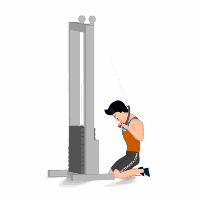

Abdominal Supra no Cabo

Exercício para fortalecimento e hipertrofia da região abdominal, reto abdominal, com enfoque na parte supra abdominal. Indicado a praticante de musculação nível intermediário e avançado.
Ficha Técnica
Tipo: Musculação
Grupo Muscular: Abdome
Aparelho: Nenhum
Músculos: Nenhum
Como realizar
- Conecte uma corda no cabo de uma roldana alta, então segure as extremidades da corda trazendo-as próximas ao pescoço;
- O tronco inclinado para frente e o quadril inclinado para trás;
- As costas ligeiramente curvadas, mantenha os cotovelos apontando para baixo próximo ao corpo, essa é a posição inicial do exercício;
- Desça o tronco o máximo que conseguir puxando-o para baixo;
- Concentre a força na região abdominal não nos braços;
- Mantenha a cabeça alinha juntamente a coluna, retorne à posição inicial de forma controlada;
- Repita os movimentos conforme o número de repetições orientado pelo professor.
 RC STORE
RC STORE